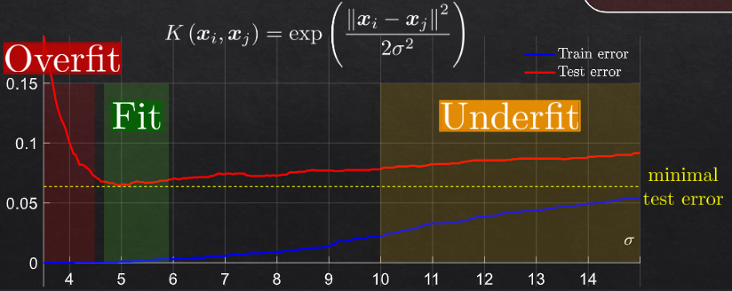

Object Location#
Object location in computer vision involves identifying and determining the position of objects within an image. This can be further divided into :
localization.md - we have one object in the image and we want to know where it is - we know there is one object in the image;
classification - what is the object
regression - where is the object
detection - no knowledge of how many objects are in the image - we want to know where they are and what they are;

Object Detection#
Object detection is a fundamental task in computer vision where the goal is to identify and locate multiple objects within an image. This task involves predicting the class and the bounding box coordinates for each object detected. Here, the number of objects is not known in advance.
Overview#
Object detection involves two primary steps:
Object Classification: Determining what objects are present.
Object Localization: Identifying where the objects are located by predicting bounding boxes.
Mathematically, if we denote an image by \( I \), object detection can be formulated as finding a set of bounding boxes \( \{ B_1, B_2, \ldots, B_n \} \) and corresponding class labels \( \{ C_1, C_2, \ldots, C_n \} \).
Real-World Examples#
Autonomous Driving: Identifying pedestrians, vehicles, traffic signs, and other obstacles.
Security Systems: Detecting intruders or suspicious objects.
Retail: Automatically recognizing and counting products on shelves.
Popular Object Detection Models#
YOLO (You Only Look Once): A real-time object detection system that divides the image into a grid and predicts bounding boxes and probabilities for each grid cell.
Faster R-CNN: Combines region proposal networks (RPN) with a Fast R-CNN detector to improve speed and accuracy.
SSD (Single Shot MultiBox Detector): Uses a single network to predict bounding boxes and class scores simultaneously.
Object Localization#
Object localization, on the other hand, is a simpler task where we assume there is only one object in the image, and our goal is to locate it by predicting a bounding box around it.
Overview#
Given an image \( I \) with one object, object localization aims to predict a bounding box \( B \) that encloses the object. This bounding box can be represented by its coordinates \( (x, y, w, h) \), where \( (x, y) \) is the top-left corner and \( (w, h) \) are the width and height of the box.
Real-World Examples#
Face Detection: Locating a face in an image for applications like face recognition or emotion detection.
Medical Imaging: Identifying the location of a tumor or other abnormality in a scan.
Robotics: Finding an object of interest for a robot to interact with.
Techniques#
Sliding Window: A brute-force method where a window of fixed size slides over the image to detect the object.
Region Proposals: Methods like Selective Search or Edge Boxes to generate potential bounding boxes which are then classified.